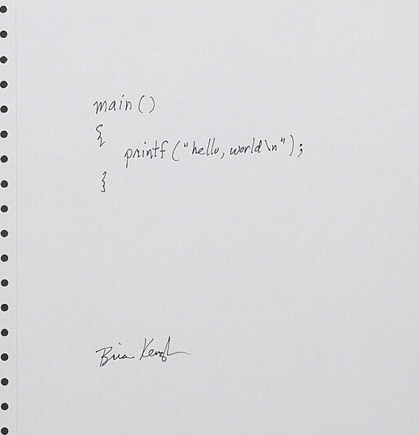

| Olá, mundo!
Objetivo Criar um programa que escreva "Olá, mundo!" na tela. O famoso programa de computador "Olá, mundo!", ou mais comumente "Hello, World!" é um programa comumente usado para exemplos e testes simples. Por onde começar? Começa-se criando um arquivo de texto com a extensão .c Como é um programa de Olá, mundo? Um programa de "Olá, mundo!" moderno em C se parece com isso: #include <stdio.h>
int main(void) { printf("Hello, World!\n"); return 0; } Explicação: #include <stdio.h> Essa linha de código é responsável por incluir a biblioteca padrão de entrada e saída, (STanDart Input and Output library) Que é uma das bibliotecas padrão que servem para controlar a Entrada (input), e saída (output) de informações do nosso programa via terminal; Nesse exemplo, usamos sómente a saída, escrevendo para a tela. int main(void) { Essa linha, define a função main (principal), do nosso programa. É por ela onde o computador começa a executar o nosso programa. Definimos também que a função principal retorna um numero inteiro, e não aceita argumentos. { e } Servem para delimitar um "escopo", nesse caso, são usadas para delimitar a função principal printf("Hello, World!\n"); Nessa linha, estamos chamando a função printf, que escreve textos formatados para o terminal ou linha de comando Aqui, passamos "Hello, World!\n" como argumento para a função. o diretivo \n indica, que, ao escrever a mensagem na tela, a próxima mensagem deve ser escrita em uma linha nova. return 0; Essa linha indica ao programa que a função principal deve retornar 0 A função principal tem uma característica especial, que, ao retornar, o programa termina sua execução O valor 0, tem significado especial, nesse caso, ele indica que não houve erro durante a execução, e tudo ocorreu corretamente |
